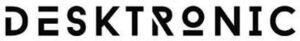

Trade Mark Journal No.2025/051 19 December 2025
WO0000001877939 (9,20)
Office of origin: European Union Intellectual Property Office (EUIPO)
Date of International Registration:30 June 2025
Date of designation in the UK:
30 June 2025

- Class 9
- 3D spectacles; 3D scanners; acid hydrometers; aerometers; accelerometers; spectacles; anti-glare glasses; spectacle chains; spectacle lenses; spectacle cords; spectacle frames; spectacle cases; actinometers; acidimeters for batteries; battery jars; battery boxes; plates for batteries; acoustic conduits; acoustic couplers; alarms; alidades; alcoholmeters; breathalyzers; ammeters; animated cartoons; anodes; anode batteries; aerials; anticathodes; apertometers [optics]; clothing especially made for laboratories; asbestos clothing for protection against fire; shoes for protection against accidents, irradiation and fire; safety tarpaulins; teeth protectors; protective face shields for workers; clothing for protection against accidents, irradiation and fire; clothing for protection against fire; headgear being protective helmets; protective suits for aviators; motorcyclists' clothing for protection against accident or injury; goggles for sports; protective helmets for sports; safety nets; anti-interference devices [electricity]; voltage surge protectors; safety helmets; asbestos gloves for protection against accidents; insulating gloves for protection against accidents; protective masks, not for medical purposes; airbags for safety purposes for fall protection; gloves for protection against accidents; protection devices against X-rays, not for medical purposes; circular slide rules; lighting ballasts; close-up lenses; asbestos screens for firefighters; personal stereos; protection devices for personal use against accidents; selfie sticks [hand-held monopods]; lenses for astrophotography; apparatus and instruments for astronomy; USB flash drives; distance measuring apparatus; distance recording apparatus; branch boxes [electricity]; hemline markers; audiovisual teaching apparatus; step-up transformers; high-frequency apparatus; anode batteries; altimeters; height measuring instruments; ear pads for headphones; headphones; steering apparatus, automatic, for vehicles; time switches, automatic; in-car telephone handset cradles; scanners [apparatus] for performing automotive diagnostics; electric wire harnesses for automobiles; crash test dummies; parking meters; autonomous navigation systems for ships; azimuth instruments; incubators for bacteria culture; balancing apparatus; voting machines; testing apparatus not for medical purposes; wavemeters; barometers; battery jars; battery boxes; battery chargers; wireless speaker microphones; wireless portable printers for use with laptops and mobile devices; cordless telephones; coaxial cables; gasoline gauges; gasoline gauges; betatrons; ticket printers; biochips; biometric passports; biometric locks; biometric identity cards; electronic access control systems for interlocking doors; flashlights [photography]; flashing lights [luminous signals]; flash-bulbs [photography]; flash lamps for smartphones; plotters; bar code readers; processors [central processing units]; chemistry apparatus and instruments; chromatography apparatus for laboratory use; chronographs [time recording apparatus]; cyclotrons; carpenters' rules; spectacles for correcting colour vision deficiency; probes for scientific purposes; frequency meters; frequency extenders; oxygen transvasing apparatus; decompression chambers; personal digital assistants [pdas]; covers for personal digital assistants [pdas]; densitometers, not for medical purposes; detectors; diaphragms [acoustics]; diaphragms [photography]; diaphragms for scientific apparatus; diagnostic apparatus for research laboratory use; diagnostic apparatus, not for medical purposes; slide projectors; magnifying glasses [optics]; enlarging apparatus [photography]; diffraction apparatus [microscopy]; dictating machines; dynamometers; satellites for scientific purposes; humanoid robots with artificial intelligence for use in scientific research; humanoid robots with artificial intelligence for preparing beverages; disk drives for computers; juke boxes for computers; stills for laboratory experiments; distillation apparatus for scientific purposes; dna chips; dosage dispensers, not for medical use [measuring apparatus]; dosimeters; choking coils [impedance]; salinometers; gasometers [measuring instruments]; gas testing instruments; apparatus for generating gas for calibration purposes; dust measuring apparatus; data processing apparatus; data gloves; intercommunication apparatus; peepholes [magnifying lenses] for doors; dvd players; reflective articles for wear, for the prevention of accidents; wearable activity trackers; wearable speakers; wearable computers; wearable video display monitors; smoke detectors; drainers for use in photography; drying racks [photography]; effects pedals for guitars; screens [photography]; screens for photoengraving; exposure meters [light meters]; films, exposed; X-ray films, exposed; electrified rails for mounting spot lights; electrical adapters; light dimmers [regulators], electric; electric door bells; electric and electronic effects units for musical instruments; converters, electric; electric apparatus for commutation; contacts, electric; conductors, electric; measuring devices, electric; igniting apparatus, electric, for igniting at a distance; alarm bells, electric; regulating apparatus, electric; resistances, electric; couplings, electric; theft prevention installations, electric; regulators [dimmers] (light -), electric; electric loss indicators; charging stations for electric vehicles; batteries, electric; batteries, electric, for vehicles; couplings, electric; relays, electric; coils, electric; locks, electric; electrified fences; electro-dynamic apparatus for the remote control of railway points; electro-dynamic apparatus for the remote control of signals; solenoid valves [electromagnetic switches]; electromagnetic coils; ticket dispensing terminals, electronic; electronic collars to train animals; electronic pocket translators; electronic sheet music, downloadable; biometric passports; electronic key fobs being remote control apparatus; electronic pens for visual display units; electronic controllers for servo motors; electronic numeric displays; batteries for electronic cigarettes; chargers for electronic cigarettes; transmitters of electronic signals; electronic interactive whiteboards; vacuum tubes [radio]; padlocks, electronic; electronic tags for goods; electronic notice boards; electronic agendas; accumulators, electric; batteries, electric, for vehicles; grids for batteries; chargers for electric batteries; circuit closers; circuit breakers; electricity conduits; discharge tubes, electric, other than for lighting; switches, electric; cables, electric; sheaths for electric cables; junction sleeves for electric cables; electric plugs; collectors, electric; wires, electric; identification sheaths for electric wires; identification threads for electric wires; materials for electricity mains [wires, cables]; connections for electric lines; electric sockets; electric actuators; holders for electric coils; covers for electric outlets; particle accelerators; epidiascopes; ergometers; evacuation chairs; facsimile machines; tripods for cameras; apparatus and instruments for physics; fluorescent screens; cameras [photography]; stands for photographic apparatus; photovoltaic cells; darkrooms [photography]; darkroom lamps [photography]; drainers for use in photography; filters for use in photography; viewfinders, photographic; photometers; glazing apparatus for photographic prints; drying apparatus for photographic prints; centering apparatus for photographic transparencies; phototelegraphy apparatus; apparatus to check franking; fire pumps; fire blankets; fire hose nozzles; fire escapes; fire engines; fire boats; fire hose; fire alarms; fire beaters; resuscitation mannequins [teaching apparatus]; galena crystals [detectors]; rearview cameras for vehicles; galvanic cells; galvanic batteries; galvanometers; head cleaning tapes [recording]; electric installations for the remote control of industrial operations; boiler control instruments; loudspeakers; horns for loudspeakers; cabinets for loudspeakers; speaking tubes; sound reproduction apparatus; wah-wah pedals; audio-and video-receivers; sound locating instruments; audio mixers; sound transmitting apparatus; audio interfaces; acoustic alarms; phonograph records; sound recording apparatus; sound recording strips; sound recording carriers; phonograph records; cleaning apparatus for phonograph records; life saving apparatus and equipment; life belts; life-saving capsules for natural disasters; life jackets; life-saving rafts; life buoys; safety nets; lifeboats; railway traffic safety appliances; surveying apparatus and instruments; surveying instruments; needles for surveying compasses; fire extinguishers; contact lenses; containers for contact lenses; contact lens cases incorporating ultrasonic cleaning functions; global positioning system [gps] apparatus; terminals [electricity]; slope indicators; measuring glassware; cleaning apparatus for phonograph records; speed indicators; speed measuring apparatus [photography]; record players; needles for record players; levels [instruments for determining the horizontal]; sounding apparatus and machines; sounding lines; sounding leads; mercury levels; haptic suits, other than for medical purposes; heliographic apparatus; sonars; hydrometers; hygrometers; holographic projection apparatus; holograms; humanoid robots having communication and learning functions for assisting and entertaining people; inductors [electricity]; infrared detectors; armatures [electricity]; slope indicators; integrated circuit cards [smart cards]; integrated circuits; interactive touchscreen terminals; inverters [electricity]; copper wire, insulated; appliances for measuring the thickness of leather; survival blankets; smartglasses; smart speakers; smartwatches; smartphones; smart rings; connected bracelets [measuring instruments]; home automation hubs; covers for smartphones; cases for smartphones; cases for smartphones incorporating a keyboard; protective films adapted for smartphones; gimbals for smartphones; ionization apparatus not for the treatment of air or water; motion tracking mounts for cameras; switchboxes [electricity]; connectors [electricity]; black boxes [data recorders]; tape recorders; telecommunication apparatus in the form of jewellery; marine depth finders; marine compasses; naval signalling apparatus; calipers; calibrating rings; calorimeters; squares for measuring; ducts [electricity]; cassette players; cash registers; cathodes; cathodic anti-corrosion apparatus; dust masks incorporating air purification; knee-pads for workers; egg-candlers; spark-guards; quantity indicators; portable document scanners; apparatus for editing cinematographic film; cinematographic film, exposed; cinematographic cameras; pocket calculators; climate control digital thermostats; slope indicators; encoded key cards; encoded identification bracelets, magnetic; magnetically encoded cards; head-up display apparatus for vehicles; compact discs [audio-video]; micrometers; microprocessors; microscopes; containers for microscope slides; microtomes; mobile telephones; holders adapted for mobile telephones and smartphones; cell phone straps; mobile phone screen protectors; lanyards for cell phones; mobile phone chargers; modems; resuscitation training simulators; teaching apparatus; teaching robots; point-of-sale [pos] terminals; juke boxes, musical; coin-operated mechanisms for television sets; coin-operated mechanisms; monitors [computer programs]; monitors [computer hardware]; apparatus for testing breast milk, other than for medical or veterinary use; musical instrument digital interface controllers being audio interfaces; test tubes; sunglasses for pets; home automation hubs; nanoparticle size analysers; ear plugs for divers; nose clips for divers and swimmers; divers' masks; diving suits; gloves for divers; weight belts for divers; nautical apparatus and instruments; navigational instruments; satellite navigational apparatus; rescue flares, non-explosive and non-pyrotechnic; carriers for dark plates [photography]; neon signs; bullet-proof clothing; bullet-proof waistcoats; neural helmets, not for medical purposes; toner cartridges, unfilled, for printers and photocopiers; ink cartridges, unfilled, for printers and photocopiers; hand-held electronic dictionaries; portable speakers; portable media players; walkie-talkies; portable ultrafine dust meters; portable power chargers; levelling staffs [surveying instruments]; levelling instruments; verniers; slope indicators; telerupters; earpieces for remote communication; remote control apparatus; mileage recorders for vehicles; objectives [lenses] [optics]; selfie lenses; lens hoods; octants; eyepieces; ohmmeters; eyewear; optical apparatus and instruments; optical discs; optical condensers; optical lenses; optical fibres [light conducting filaments]; optical character readers; optical lanterns; optical glass; micrometer screws for optical instruments; optical data media; optical lanterns; organic light-emitting diodes [OLED]; air analysis apparatus; respirators for filtering air, not for medical purposes; oscillographs; ozonizers for calibration purposes; ozonizers for calibration purposes; counterfeit coin detectors; satellite finder meters; electronic publications, downloadable; downloadable graphics for mobile phones; downloadable emoticons for mobile phones; downloadable cryptographic keys for receiving and spending crypto assets; downloadable ring tones for mobile phones; downloadable digital music files authenticated by non-fungible tokens [NFTs]; downloadable digital image files authenticated by non-fungible tokens [NFTs]; downloadable virtual clothing; computer game software, downloadable; computer software applications, downloadable; downloadable computer software for managing crypto asset transactions using blockchain technology; downloadable computer software applications for minting non-fungible tokens [NFTs]; software as a medical device [SaMD], downloadable; downloadable application software for virtual environments; downloadable e-wallets; computer programs, downloadable; downloadable music files; downloadable image files; food analysis apparatus; franking (apparatus to check -); mouse [computer peripheral]; mouse pads; pince-nez; punched card machines for offices; periscopes; petri dishes; automated teller machines [ATM]; money counting and sorting machines; pyrometers; gloves for protection against X-rays for industrial purposes; finger sizers; pitot tubes; piezoelectric sensors; planimeters; tablet computers; covers for tablet computers; dive skins; washing trays [photography]; fibre optic cables; thin film speakers; film cutting apparatus; polarimeters; breathing apparatus for underwater swimming; radio pagers; security tokens [encryption devices]; baby monitors; dashboard mats adapted for holding mobile telephones and smartphones; sprinkler systems for fire protection; body harnesses for support when lifting loads; prisms [optics]; processors [central processing units]; projection apparatus; projection screens; slide projectors; magic lanterns; decorative magnets; semi-conductors; wafers for integrated circuits; radar apparatus; masts for wireless aerials; radios; headphones; transmitting sets [telecommunication]; radiological apparatus for industrial purposes; radiology screens for industrial purposes; radiotelephony sets; radiotelegraphy sets; riding helmets; missile warning systems; wheel alignment meters; refractometers; refractors; T-squares for measuring; X-ray apparatus not for medical purposes; apparatus and installations for the production of X-rays, not for medical purposes; X-ray tubes not for medical purposes; X-ray photographs, other than for medical purposes; rheostats; retorts; retorts' stands; limiters [electricity]; wrist rests for use with computers; spools [photography]; trackballs [computer peripherals]; fog signals, non-explosive; saccharometers; safety restraints, other than for vehicle seats and sports equipment; nets for protection against accidents; security surveillance robots; sunglasses; solar batteries; solar panels for the production of electricity; self-checkout terminals; stage lighting regulators; sextants; amplifiers for servomotor; controllers for servo motors; spherometers; animal signalling rattles for directing livestock; signalling buoys; signal bells; signalling whistles; signal lanterns; anti-theft warning apparatus; sirens; dressmakers' measures; thread counters; transmitters [telecommunication]; transponders; frames for photographic transparencies; transparencies [photography]; counters; digital signs; gimbals for digital cameras; electronic book readers; digital photo frames; digital weather stations; abacuses; readers [data processing equipment]; slide-rules; calculators; bells [warning devices]; push buttons for bells; scanners for data processing; distribution consoles [electricity]; junction boxes [electricity]; distribution boards [electricity]; distribution boxes [electricity]; laptop computers; cooling pads for laptop computers; bags adapted for laptops; sleeves for laptops; slide calipers; pressure indicators; pressure measuring apparatus; pressure gauges; pressure indicator plugs for valves; egg timers [sandglasses]; egg timers [sandglasses]; printed circuits; printed circuit boards; cases especially made for photographic apparatus and instruments; furniture especially made for laboratories; spectrograph apparatus; spectroscopes; spirit levels; sports whistles; mouth guards for sports; head guards for sports; flowmeters; screw-tapping gauges; current rectifiers; monitoring apparatus, other than for medical purposes; observation instruments; stereoscopes; stereoscopic apparatus; measuring glassware; amplifying tubes; amplifying tubes; amplifiers; stands adapted for laptops; stroboscopes; foldable smartphones; sulfitometers; adding machines; plumb lines; plumb bobs; scales; balances [steelyards]; scales with body mass analysers; weights; scales (lever -) [steelyards]; scales (lever -) [steelyards]; weighing apparatus and instruments; weighing machines; interfaces for computers; invoicing machines; revolution counters; tachometers; taximeters; densimeters; telepresence robots; answering machines; telephone apparatus; telephone wires; telephone transmitters; telephone receivers; telegraphs [apparatus]; telegraph wires; range finders; telescopes; telescopic sights for artillery; sighting telescopes for firearms; teleprinters; television apparatus; teleprompters; temperature indicators; temperature indicator labels, not for medical purposes; theodolites; thermal imaging cameras; thermionic valves; thermionic valves; thermo-hygrometers; dry suits; thermometers, not for medical purposes; thermostats; thermostats for vehicles; crucibles [laboratory]; crucibles [laboratory]; precision measuring apparatus; precision balances; weighbridges; range finders; totalizators; transformers [electricity]; vehicle breakdown warning triangles; speed checking apparatus for vehicles; mileage recorders for vehicles; navigation apparatus for vehicles [on-board computers]; automatic indicators of low pressure in vehicle tyres; vehicle radios; parking sensors for vehicles; simulators for the steering and control of vehicles; transistors [electronic]; triodes; fire extinguishing apparatus; fire-extinguishing balls; ultrasonic imaging apparatus, not for medical purposes; filters for ultraviolet rays, for photography; urinometers; ignition batteries; shutters [photography]; shutter releases [photography]; notebook computers; videotapes; video screens; video recorders; video mixing desks; video projectors; memory cards for video game machines; headsets for playing video games; video game cartridges; vacuum gauges; wet suits; water level indicators; rods for water diviners; starter cables for motors; variometers; user-programmable humanoid robots, not configured; mirrors for inspecting work; mirrors [optics]; camcorders; video cassettes; video baby monitors; video telephones; internal cooling fans for computers; equalizers [audio apparatus]; devices for the projection of virtual keyboards; virtual reality headsets; virtual reality controllers; viscosimeters; voltmeters; bathroom scales; anemometers; wind socks for indicating wind direction; sounding rockets; buzzers; computer game software, recorded; computer software, recorded; data sets, recorded or downloadable; computer programs, recorded; computer operating programs, recorded; tone arms for record players; apparatus for changing record player needles; speed regulators for record players; whistle alarms; cell switches [electricity]; voltage regulators for vehicles; jigs [measuring instruments]; head-mounted displays; helmet visors; heat regulating apparatus; dog whistles; traffic-light apparatus [signalling devices]; blueprint apparatus; light-emitting diodes [LED]; reflective safety vests; beacons, luminous; light-emitting electronic pointers; road signs, luminous or mechanical; signalling panels, luminous or mechanical; signals, luminous or mechanical; safety signals [luminous]; warning signs [luminous]; signs, luminous; lightning conductors; lightning conductors; lightning conductors; apparatus for measuring the thickness of skins; cell switches [electricity]; subwoofers; mechanisms for counter-operated apparatus; mobile phone ring holders; mobile phone ring stands; selfie ring lights for smartphones; ring sizers; pedometers; binoculars; marking gauges [joinery]; marking buoys; monitor arms.
- Class 20
- Console tables; tea trolleys; book rests [furniture]; corozo; high chairs for babies; oyster shells; beehives; furniture; doors for furniture; feet for furniture; legs for furniture; furniture shelves; drawers [furniture parts]; bamboo, unworked or semi-worked; sleeping mats of bamboo or straw; bamboo curtains; whalebone, unworked or semi-worked; library shelves; bead curtains for decoration; office furniture; drafting tables; bottle racks; corks for bottles; kennels for household pets; work benches; vice benches [furniture]; reusable baby changing mats; artificial honeycombs for beehives; filing cabinets; coatstands; costume stands; wardrobes; garment covers [storage]; covers for clothing [wardrobe]; drain traps [valves] of plastic; shower chairs; stag antlers; ergonomic chairs for seated massage; head-rests [furniture]; yellow amber; ambroid plates; ambroid bars; crates; beds for household pets; animal claws; stuffed animals; animal horns; flower-stands [furniture]; flower-pot pedestals; sideboards; plate racks [furniture]; birdhouses; mats, removable, for sinks; jewellery organizer displays; meerschaum; shells; hanging closet organizers; pet cushions; indoor window blinds [furniture]; corks; stoppers, not of glass, metal or rubber; divans; settees; animal hooves; coffins; racks for storing cardboard; shelves for file cabinets; index cabinets [furniture]; scratching posts for cats; bakers' bread baskets; mats for infant playpens; playpens for babies; hairdressers' chairs; bookcases; footstools; chests of drawers; coral; armchairs; seats; cots for babies; funerary urns; newspaper display stands; stair rods; letter boxes, not of metal or masonry; racks [furniture]; bassinets; beds; cushions; bed bases; mannequins and tailors' dummies; massage tables; sections of wood for beehives; staves of wood; boxes of wood or plastic; signboards of wood or plastics; ladders of wood or plastics; placards of wood or plastics; furniture partitions of wood; bottle casings of wood; bedsteads of wood; reels of wood for yarn, silk, cord; casks of wood for decanting wine; wood ribbon; cabinet work; busts of wood, wax, plaster or plastic; figurines of wood, wax, plaster or plastic; crucifixes of wood, wax, plaster or plastic, other than jewellery; works of art of wood, wax, plaster or plastic; prize cups of wood, wax, plaster or plastic; commemorative statuary cups of wood, wax, plaster or plastic; statues of wood, wax, plaster or plastic; figurines of wood, wax, plaster or plastic; furniture of metal; tables of metal; seats of metal; sleeping pads; sleeping pads; mobiles [decoration]; school furniture; chopping blocks [tables]; meat safes; pet beds and houses; cushions for lining pet crates and houses; shoulder poles [yokes]; fans for personal use, non-electric; plugs, not of metal; coathooks, not of metal; door stops, not of metal or rubber; window stops, not of metal or rubber; waste dumpsters, not of metal, other than for medical use; stakes, not of metal, for plants or trees; brackets, not of metal, for furniture; furniture casters, not of metal; shoe pegs, not of metal; shoe dowels, not of metal; bins, not of metal; bottle caps, not of metal; bottle closures, not of metal; bottle closures, not of metal; clothes hooks, not of metal; coathooks, not of metal; door openers, not of metal, non-electric; door knockers, not of metal; door closers, not of metal, non-electric; door bells, not of metal, non-electric; door fasteners, not of metal; door bolts, not of metal; queue ticket dispensers, not of metal; reservoirs, not of metal nor of masonry; dowels, not of metal; jerrycans, not of metal; mobile boarding stairs, not of metal, for passengers; step stools, not of metal; containers, not of metal [storage, transport]; closures for containers, non-metallic; baskets, non-metallic; loading pallets, not of metal; loading gauge rods, not of metal, for railway wagons; transport pallets, not of metal; vats, not of metal; cask hoops, not of metal; plugs [dowels], not of metal; mooring buoys, non-metallic; mechanisms (non-metallic, non-electric -) for opening windows; window pulleys, not of metal; sash fasteners, not of metal, for windows; window fasteners, not of metal; window closing devices (non-electric -) of non-metallic materials; hinges, not of metal; bed casters, not of metal; binding screws, not of metal, for cables; plugs [dowels], not of metal; trays, not of metal; window pulleys, not of metal; tent pegs, not of metal; floating containers, not of metal; dowels, not of metal; split rings, not of metal, for keys; hand-held flagpoles, not of metal; towel dispensers, not of metal; dowels, not of metal; screws, not of metal; cask hoops, not of metal; taps, not of metal, for casks; poles, not of metal; runners, not of metal, for sliding doors; bottles [containers], not of metal, for compressed gas or liquid air; containers, not of metal, for compressed gas or liquid air; toilet paper dispensers, not of metal; handling pallets, not of metal; screw tops, not of metal, for bottles; bolts, not of metal; bathtub grab bars, not of metal; dispensers, not of metal, for dog waste bags; house numbers, not of metal, non-luminous; furniture fittings, not of metal; door fittings, not of metal; coffin fittings, not of metal; window fittings, not of metal; bed fittings, not of metal; recycling bins, not of metal; door handles, not of metal; bins, not of metal; identification bracelets, not of metal; nameplates, not of metal; clips, not of metal, for cables and pipes; rivets, not of metal; steps [ladders], not of metal; bag hangers, not of metal; numberplates, not of metal; padlocks, not of metal, other than electronic; nameplates, not of metal; paper towel dispensers, not of metal; knobs, not of metal; numberplates, not of metal; troughs, not of metal, for mixing mortar; locks, other than electric, not of metal; casks, not of metal; cask stands, not of metal; barrels, not of metal; oil drainage containers, not of metal; locks, not of metal, for vehicles; collars, not of metal, for fastening pipes; latches, not of metal; nuts, not of metal; plugs, not of metal; tool boxes, not of metal, empty; tool chests, not of metal, empty; reels, not of metal, non-mechanical, for flexible hoses; horn, unworked or semi-worked; reeds [plaiting materials]; hand-held mirrors [toilet mirrors]; portable desks; removable covers for sinks; anti-roll cushions for babies; air pillows, not for medical purposes; saw horses; infant head-support pillows; pillows; head positioning pillows for babies; bolsters; coat hangers; bedding, except linen; nesting boxes; stuffed birds; picture frames; mouldings for picture frames; picture frame brackets; mouldings for picture frames; mother-of-pearl, unworked or semi-worked; freestanding partitions [furniture]; moses baskets; wickerwork; bassinets; hampers [baskets] for the transport of items; lecterns; saw benches [furniture]; edgings of plastic for furniture; decorations of plastic for foodstuffs; clips of plastic for sealing bags; plastic keys; water-pipe valves of plastic; valves of plastics, other than for use in machines; packaging containers of plastic; labels of plastic; plastic key cards, not encoded and not magnetic; sew-on tags of plastic for clothing; plastic ramps for use with vehicles; pulleys of plastics for blinds; slatted indoor blinds; washstands [furniture]; counters [tables]; wall-mounted baby changing platforms; inflatable publicity objects; inflatable furniture; air beds, not for medical purposes; air mattresses, not for medical purposes; air cushions, not for medical purposes; luggage lockers; lockers [furniture]; keyboards for hanging keys; towel stands [furniture]; desks; typing desks; typing desks; rattan; trestles [furniture]; shelves for storage; writing desks; tea trolleys; silvered glass [mirrors]; embroidery frames; mannequins and tailors' dummies; sneeze guards; stands for calculating machines; display boards; hat stands; containers, not of metal, for liquid fuel; umbrella stands; sofas; special covers for handling and transporting non-metallic cylinders of compressed gas; cupboards; tables; lap desks; table tops; drawer organizers; shelving units; standing desks; valet stands; deck chairs; benches [furniture]; seats; stools; reservoirs, not of metal nor of masonry; dressing tables; camping mattresses; curtain hooks; curtain rods; curtain rails; curtain holders, not of textile material; curtain tie-backs; curtain rollers; curtain rings; dinner wagons [furniture]; bumper guards for cots, other than bed linen; infant walkers; medicine cabinets; waterbeds, not for medical purposes; mirror tiles; mirrors (silvered glass); trolleys [furniture]; trolleys for computers [furniture]; indoor window blinds of textile; indoor window blinds [furniture]; indoor window blinds of woven wood; indoor window blinds of paper; kitchen dressers [furniture]; coat hangers; display stands; showcases [furniture]; bathroom stools; bath seats for babies; bathroom vanities [furniture]; wind chimes [decoration]; tortoiseshell; imitation tortoiseshell; mattresses; fodder racks; gun racks; brush mountings; chaise longues; straw edgings; straw plaits; plaited straw, except matting; straw mattresses; screens [furniture]; dog kennels; chests for toys; screens for fireplaces [furniture]; magazine racks; fishing baskets; office armchairs; dining chairs; banqueting chairs; reclining chairs; personal computer work stations [furniture]; cable clamps and clips, not of metal.
UAB Desktronic
Representative: Vilija Viešūnaitė, Vilniaus str. 31, LT-01402 Vilnius, LITHUANIA